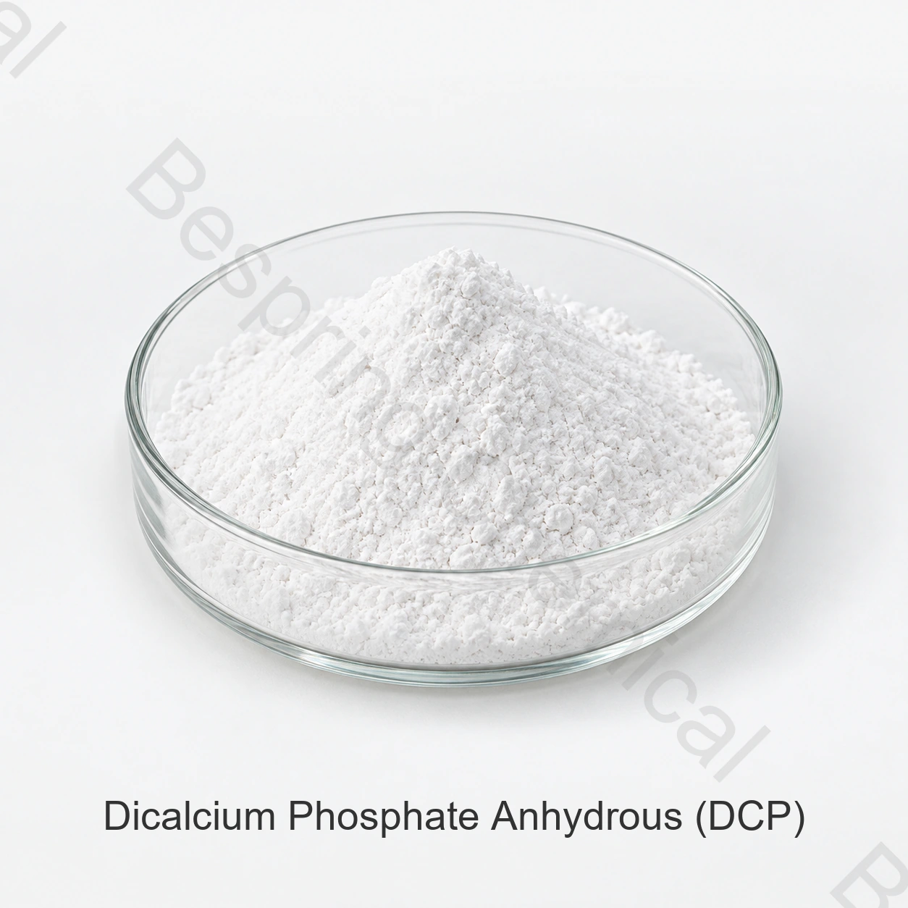

無水磷酸氫鈣（DCP）
不含結晶水的磷酸氫鈣，分子式為 CaHPO4 常用的化學文摘社編號為7757-93-9。
- 分子量:約136.06
- JECFA 乾燥失重:≤2%在200°C下3小時
- 確認粒徑和功能效能
食品配料 · 磷酸鈣 · E341(ii)
百泉化工提供食品級無水磷酸氫鈣(DCP ) , 也稱為氫磷酸鈣,用於合格的麵糰調理、酵母食品和礦物成分應用。本頁面僅涵蓋無水源;二水合物 DCP 磷酸氫鈣有單獨的身份和產品頁面。
包括相關提案所需的形式、標準、數量、目的地和食品應用。

產品概述
食品級無水磷酸氫鈣是磷酸氫鈣,CaHPO4, CAS 7757-93-9 和 INS/E341(ii ) 。JECFA還使用同義詞二鹼性磷酸鈣和磷酸氫鈣。
易溶於水,不含水結晶。粒徑, 含量測定基礎, 乾燥失重, 雜質限值和目的地市場的要求因此比簡稱“DCP 磷酸氫鈣”本身更有用的採購變數.
明確水合物形態
此網址涵蓋無水CaHPO4。二水合物 CaHPO4·2H2O有不同的分子式、分子量、CAS編號和水損失特性。
不含結晶水的磷酸氫鈣，分子式為 CaHPO4 常用的化學文摘社編號為7757-93-9。
含兩分子結晶水的磷酸氫鈣，分子式為 CaHPO4·2H2O,化學文摘社編號為7789-77-7。
食品加工功能
實際使用水平和允許的食品類別取決於配方和目的地市場。在商業使用前完成技術試驗和監管審查。
JECFA將麵糰調理劑列為功能性用途。驗證麵粉系統、粒徑、加工順序和合法使用條件。
JECFA也列出酵母食品。確認完整的營養系統和允許的應用，而不是假定普遍效果。
根據商定的分析基礎評估鈣和磷的貢獻,然後確認成品食品宣告和當地授權。
評估完整粉末混合物的粒度分佈、堆積密度、流動性、偏析和相容性。
技術資訊
以下數值以一致的格式重現了所提供的採購規範。它們不是批次COA或通用監管標準。訂購前確認形式、試驗方法和合同限值。
| 檢測專案 | 單位 | 參考規格 |
|---|---|---|
| 磷酸氫鈣（CaHPO4)含量,無水基 | % | 98.0–102.0 |
| P2O5 含量 | % | 50.0–52.5 |
| 砷(As) | % | ≤ 0.0003 |
| 氟化物(F) | % | ≤ 0.005 |
| 重金屬(以Pb計) | % | ≤ 0.0015 |
| 不溶於鹽酸 | % | ≤ 0.05 |
| 灼燒失重 | % | ≤ 8.5(提供無水規格) |
| 鉛(Pb) | % | ≤ 0.0005 |
| 鎘(Cd) | % | ≤ 0.0001 |
| 汞(Hg) | % | ≤ 0.0001 |
規格說明: 源表似乎包含 OCR 錯誤; “P₄O₆” 已標準化為常規 DCP 磷酸氫鈣參數 P₂O₅。本商業表格中的灼燒失重與JECFA乾燥失重不可互換。最終驗收必須使用批准的來源規格、定義的方法和批次COA。
該 糧農組織/世衛組織JECFA磷酸氫鈣專論 標識CAS 7757-93-9,INS 341(ii ) , CaHPO4、乾燥後含量98–102%、微溶於水，以及麵糰調理劑／酵母營養劑的功能。 美國FDA雙鹼性磷酸鈣記錄 獨立列出CAS 7757-93-9和公認的技術效應。這些參考資料支援身份上下文;它們並不認證百泉化工的批次或授權每個食品應用。
無水DCP認證
使用準確的水合物形態和分析方法作為比較基線。
指定無水CaHPO4, CAS 7757-93-9 和 INS/E341(ii ) ; 不接受不合格的“DCP 磷酸氫鈣”描述。
確認乾燥條件，以及含量、P2O5、鈣及水分相關指標是以原樣還是乾燥後基準報告。
匹配粉末或顆粒形式,粒度分佈,堆積密度和流動性給料,混合和分離風險。
根據指定的測試方法調整氟化物、砷、鉛、鎘、汞和其他目的地特定限值。
核實預期類別、使用級別、技術功能和標籤符合製造和目的地市場的規定。
請求當前簽署的規格、SDS、代表和批次 COA,以及確切來源和期間有效的證書。
本頁介紹食品添加劑與食品配料的資格核定。動物日糧原料採購請參閱 飼料級DCP頁面營養保證、汙染物、物種規則和檔案必須單獨評估。
儲存和搬運
磷酸鈣決策路徑
使用相關頁面將產品身份與配方和礦物選擇問題分開。
採購常見問題
DCP 磷酸氫鈣用於適合食品配方的膨鬆成分、麵糰調理劑、緩衝劑、鈣磷源、穩定劑和功能性成分。法規許可和劑量取決於產品和市場。
不涵蓋。本頁介紹食品級無水 CaHPO4, CAS 7757-93-9.二水合CaHPO4·2H2O，CAS 7789-77-7，有獨立產品頁面，應單獨報價。
不是。磷酸氫鈣(DCP ) 、 磷酸二氫鈣(MCP)和磷酸三鈣(TCP)是不同的磷酸鈣鹽。它們的鈣磷比、酸度、溶解度和食品功能各不相同。
參考包裝為每袋25公斤,規定的最低訂單數量為500公斤。參考裝載量為每20英尺集裝箱22公噸。在訂購前確認托盤裝載和目的地特定裝載。
請求當前簽署的規格、SDS、代表和批次COA,以及適用的食品安全、質量、原產地、過敏原、猶太教、清真或其他證書。確認每份檔案都涵蓋了準確的產品、製造地點和所需期間;可用性是具體貨源的。
提供水合物形態、所需規格或標準、粒徑要求、數量、包裝、目的地國家或港口、預期食品應用和交貨日期。
2026-08-22 由百泉化工技術出口團隊進行實質性稽核。具體貨源的規格、包裝和證書宣告需經內部確認後方可釋出。
開始採購對話
共享決定產品選擇和上岸成本的技術和物流詳細資訊。我們的團隊隨後可以提供相關檔案和商業建議。